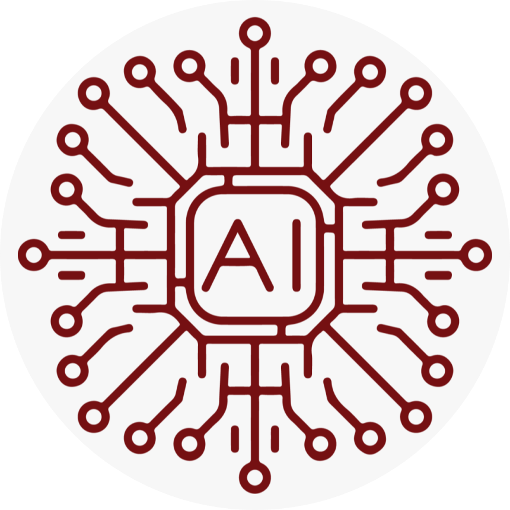

Muhammad AbubakarData Science and Machine Learning Expert email:Muhammadabubakar.ta@itu.edu.pk cell: +92 312 7301833 Recently graduated with MS in Data Science with focus on Machine Learning and Deep Learning, I am currently working in ITU Lahore as teaching assistant and previously worked in a AI company based in Lahore called Auxtend. I have worked on several machine learning projects including multi-label text classification, information retrial, neural machine translation, chat-bots, semantic similarity for document relevance etc. I am proficient in data cleaning and preprocessing, computer vision and natural language processing.I am fluent in python and comfortable working with both tensorflow and pytorch. Currently I am working on MRNet competition by Stanford University to automate the diagnosis of ACL injury in knee using MRI scans. I was able to design a neural network structure to incorporate all the three (sagittal, coronal, axial) views of the MRI scan into a single neural network for a end to end machine learning solution with validation AUC accuracy of 94%. |
Education
|
Masters in Data Science -UMT Lahore- CGPA 3.7 2018 - 2020 Main focus was on Deep Learning and NLP, extensively worked on twitter customer care dataset for conversational AI and on a dataset of research articles for information retrial and article relevence. |
Work Experience
 |
Teaching Assistant - ITU Lahore Feburary 2020 - June 2020 I assisted Sir Ahmed Bilal for Data Analytics course and Mam Komal Ashfaq for Digital Marketing courses in the spring 2020 semester at Information Technology University Lahore. |
|  |
Intern Machine Learnign Engineer July 2019 - January 2020 I assisted Sir Ahmed Bilal for Data Analytics Class and Mam Komal Ashfaq for Digital Marketing Class in the spring 2020 semester at Information Technology University Lahore. |
Skills
|
|
Research Interests
- Medical Imaging and AI Assisted Diagnosis
- Single Shot and Zero Shot Learning
- Semi Supervised Learning
- Conversational AI